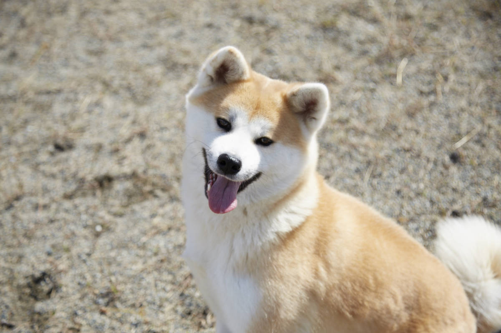
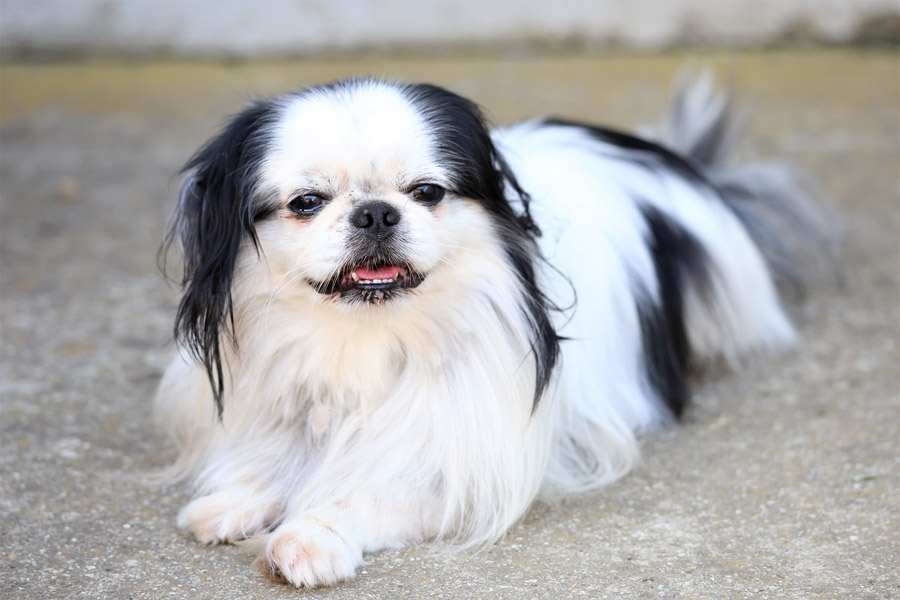
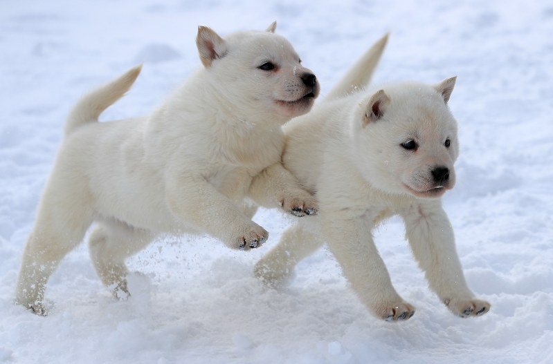
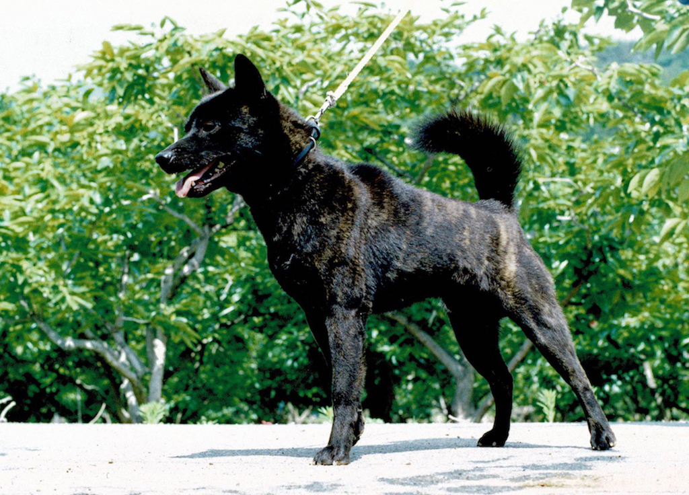
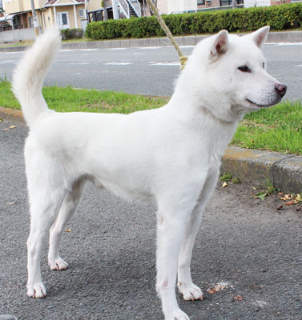
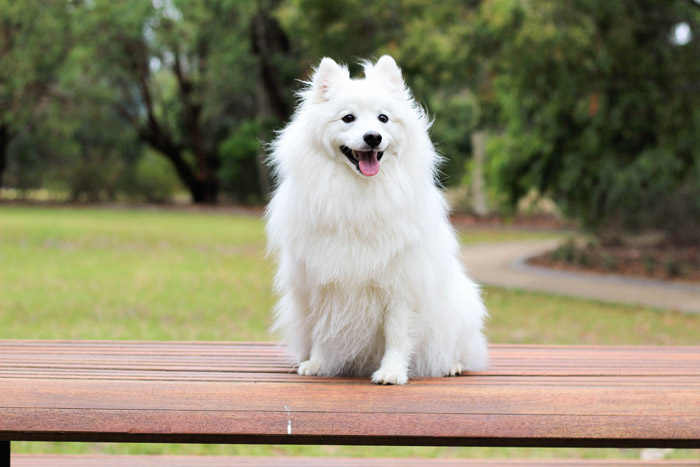
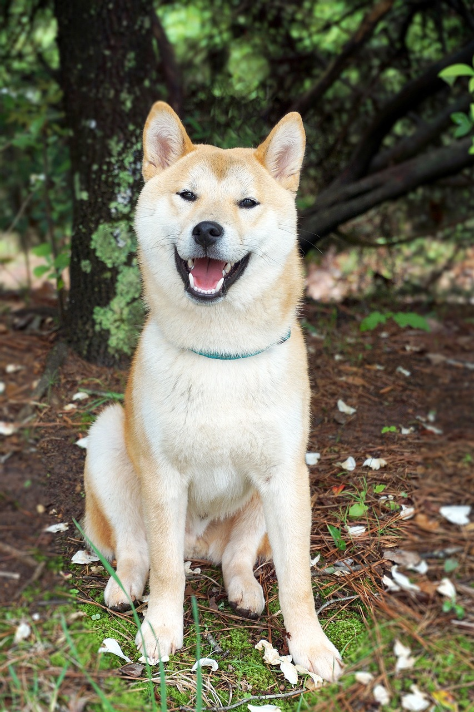
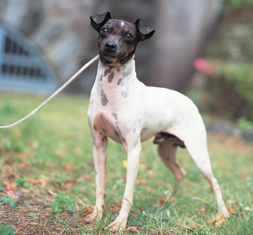
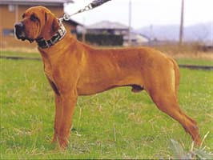

日本の犬種の紹介
-

- 秋田犬(アキタイヌ)
-
天然記念物に認定された大型の日本犬
忠誠心が厚く従順で命令に素直に従い、とても賢い
-

- 狆(チン)
- 1680年頃にお座敷犬として江戸城で飼われていた犬
耳は前方に垂れており、毛は長く、丸く大きな目と短い口先が特徴
-

- 北海道犬(ホッカイドウイヌ)
- その名のとおり、北海道が原産であり、ルーツはマタギ犬といわれる狩猟犬
闘争心が強く、勇敢な性格であり野生に近い緊張感や警戒心も備えている
-

- 甲斐犬(カイケン)
- 立ち耳で巻尾または差尾、しっかりとした四肢と体格を持つ中型の日本犬
生涯でたった1人の飼い主に仕えようとする、非常に忠誠心が高い性格
-

- 紀州犬(キシュウイヌ)
- 引き締まった容姿とすぐれた運動能力をもつ中型犬
落ち着いた性格で、成犬になるとはしゃぐようなことは少なく、まじめさや忠実さがある
-

- 日本スピッツ(ニホンスピッツ)
- 国内の登録犬数トップになるほどの人気犬種として親しまれていた犬
温和で、人なつっこくかわいい
-

- 柴犬(シバイヌ)
- 猟犬として活躍してきたルーツをもつ小型犬
国の天然記念物に指定されている日本犬種のひとつで、他の日本犬よりも小型で飼いやすいところが人気
-

- 日本テリア(ニホンテリア)
- 抱き犬として改良されたため、コンパクトな体型をしている
穏やかで甘えん坊な性格であり、黒い頭と白い体のコントラストが特徴/dl>
-

- 土佐犬(トサイヌ)
- 小さな土佐犬で30kg程度、大きなものは100kgを超えることもある大型犬
縄張り意識が強いため番犬に向いている